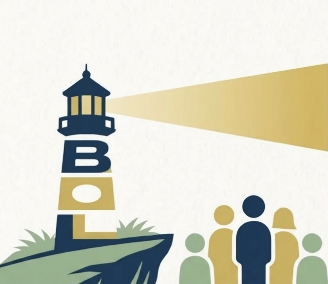

Weekly Bible Study
Bible Study is scheduled for Thursdays at 8:00 PM online. Contact the church for the meeting link.

BEACON OF LIGHTCHRISTIAN FELLOWSHIP CENTER · VIENNAOur Thursday Bible Study readings for 2026 and 2027, week by week.
Loading programme…
Bible Study is scheduled for Thursdays at 8:00 PM online. Contact the church for the meeting link.
Bring your questions, a Bible and an open heart. Each topic can include Scripture reading, reflection, prayer and a practical next step.
See the calendar →